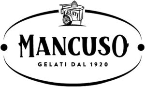

Trade Mark Journal No.2026/003 16 January 2026
WO0000001893418 (30)
Office of origin: Italy

The trademark is made up of name and figurative elements. In particular, the words "MANCUSO", "GELATI" and "DAL 1920" can be read on two different places. On the right side of the first letter "M" of the word "MANCUSO" and on the left side of the last letter "O" of the same word, two small fantasy figures are visible in a slightly inclined position. Furthermore, the word "MANCUSO" is larger than the rest of denominative portions. On the upper side of the word "MANCUSO", a stylized cart is visible with the word "GELATI" in its central part. The mark as a whole is surrounded by a semi-elliptical figure which is interrupted in its upper part by the figure of the cart described above and by two small circles placed on the right and left sides of the above-mentioned figure. The whole thing is highly stylized.
- Class 30
- Ice cream; ice cream, frozen yogurt and sorbets; soft ice cream; confectionery, ice cream; mixed ice cream; ice cream lollies; ice cream mixes; frozen ice cream [popsicles]; ice cream cones; binding agents for ice cream; chocolate ice cream; ice cream powders; ice cream confectionery; ice cream sauces; frozen yogurt [ice cream]; fruit ice cream; fruit ice cream; mixes for sorbets [ice cream]; flavoring preparations for ice cream; mixes for making ice cream; chocolate-flavored ice cream; binding agents for organic ice cream; milk-based ice cream; soya-based ice cream; mixes for ice cream cones; flavored gelatin crystals for making gelatin confectionery; mixes for making ice cream; non-dairy-based ice cream; natural flavorings for use in ice cream [except ethereal essences or essential oils]; frozen milk [ice cream]; vegan ice cream; ice cream bars; ice cream desserts; ice cream cakes; ice cream sticks; ice cream cones; ice cream desserts; ice cream candies; alcohol-infused ice cream; ice cream sandwiches; parfaits (ice cream with whipped cream); ice cream drinks; coffee drinks containing ice cream (affogato); mixes for making ice cream products; almond confectionery; cocoa; cocoa nibs; cocoa products; cocoa powder; wafers (cookies); biscuits; almond biscuits; wafers; edible wafers; wafer pralines; chocolate wafers; crispy rolled wafers; chocolate caramel wafers; pastries; dry pastries; fresh pastries; ready-made desserts [pastry]; fruit-based pastries; fruit-filled pastries; crêpes; batter for crepes; ready-made desserts [confectionery]; mousse [dessert] [cakes]; chocolate desserts; cakes; natural sweeteners; sweet glazes and fillings; sugars, natural sweeteners, glazes and fillings for cakes, bee products and edible decorations; sugar-based foods for sweetening desserts; sweet spreads [honey]; candied decorations for cakes; semifreddo desserts; frozen yogurt desserts; flavoring preparations for cakes; cake mixes; cakes; fresh cakes; frozen yogurt cakes; jellies (sweets); ice cream desserts.
MANCUSO VINCENZO & C. SRL
Representative: DOTT. FRANCO CICOGNA & C. S.R.L. – 1350M Dr. Alessandro Porta, Via Visconti di Modrone, 14/A I, I-20122 Milano, ITALY